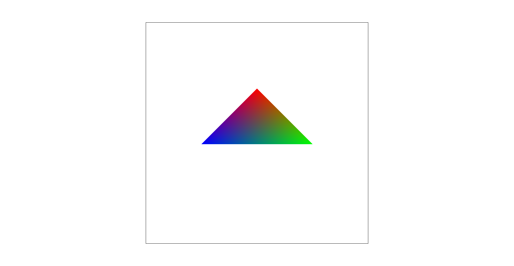
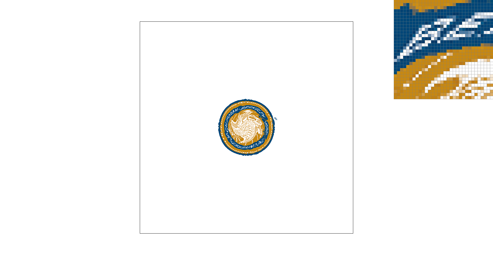
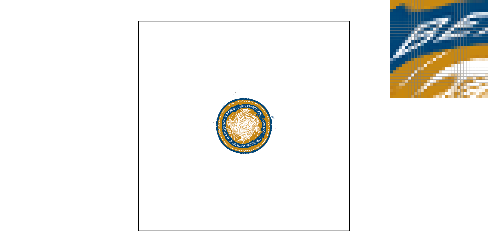

CS184/284A Spring 2025 Homework 1 Write-Up
Link to webpage: https://cal-cs184-student.github.io/hw-webpages-g4ce99/hw1/index.html
Link to GitHub repository: github.com/cal-cs184-student/sp25-hw1-g4ce
Overview
In this homework, we created a basic rasterization engine capable of rendering SVG images with various anti-aliasing protocals like supersampling, pixel sampling, and level sampling. Additionally, all of our engine's functionality supports both SVGs that import custom textures and those that directly define polygon colors.We both were fascinated by the precise use of linear algebra needed to both rasterize and anti-alias images correctly. Overall, we gained a deeper understanding of the formulas discussed in lecture and how different anti-aliasing technique interact when used simultaneously.
Task 1: Drawing Single-Color Triangles
First, we ensure that the winding order of the triangle vertices is counter-clockwise by ensuring: \[(p_1-p_0) × (p_2-p_1) >= 0\]
If the value is less than 0, the winding order is currently clockwise, so we swap \(p_1\) and \(p_2\) to ensure \(p_0, p_1, p_2\) have counter-clockwise winding order (this is important for the 3 line test later).
Then, we find coordinates for the bounding box the triangle is in by finding the minimum and maximum x,y values among the 3 vertices of the current triangle.
This ensures that our sampling algorithm only samples pixels within the current triangle's bounding box; hence our sampling algorithm is not worse in runtime than sampling every pixel in this box.
Next we loop over all the pixels, going column by column, and for the center of each pixel, we use the 3 line test described by the following inequalities to check/fill in each pixel based on whether is in the triangle or not.
Note: The perp function rotates a vector 90 degrees to the left in these equations
\[(p_t - p_0) ⋅ perp(p_1 - p_0) >= 0\]
\[(p_t - p_2) ⋅ perp(p_0 - p_2) >= 0\]
\[(p_t - p_1) ⋅ perp(p_2 - p_1) >= 0\]
Task 2: Antialiasing by Supersampling
We used the sample buffer data structure to track the super samples of our data. We used this structure to enable us to dynamically change the supersample rate (the dimensions of the sample buffer) without having to modify the frame buffer structure. First, we rasterize the triangles at the supersampling resolution in the sample buffer. Then, when setting the frame buffer, we iterate through each pixel in our frame buffer and set its color to be the average of all of the supersamples’ color values within the pixel in the sample buffer. Supersampling is useful because it helps blend together jaggies, ultimately creating images with a smoother look. This reduces the effects of antialiasing since we are removing the high frequency signals in the image that are improperly sampled by averaging together surrounding pixels.
|
|
|
|
The anti-aliasing affect that supersampling provides is visible in the figures above. As we increase the sample rate, we can see that this triangle corner becomes more blurred as the pixels at the triangle edges are averaged with white pixels outside of the triangle. This blurring removes the jaggies that are apparent in the image where our sampling rate is 1 and ultimately, results in a cleaner image look.
Task 3: Transforms
We are trying to make cubeman come in for a hug! We first tried simply rotating his forearms around his elbows, but we thought that it looked like he was cheering more than coming in for a hug. So we experimented with other rotations and translations and ended with this beautiful image.
Task 4: Barycentric coordinates
Barycentric coordinates are a way of representing points as a linear combination of the vertex coordinates of a triangle.
These coordinates (\(α, β, γ\)) for a specific point are computed using the ratios of areas of the sub triangles formed by the 3 vertices and the point of interest to the area of full triangle.
Specifically, the equations we used to calculate these coordinates for a given point \(p_t\) and the three vertices \(p_0, p_1, p_2\) in counter-clockwise winding order were:
\[α = \frac{(p_1-p_t) × (p_2-p_t)}{(p_1-p_0) × (p_2-p_0)}, \quad β = \frac{(p_2-p_t) × (p_0-p_t)}{(p_1-p_0) × (p_2-p_0)}, \quad γ = 1 - α - β\]
Additionally, these coordinates are extremely useful because they allow you to interpolate certain properties of the vertices like color throughout the triangle.
In the image below on the left, we can see this interpolation of color quite clearly.
Each vertex was assigned a color (red, blue, green), and using barycentric coordinates, we are able to seemlessly blend these colors throught the triangle by incorporating more of a vertex's color value the closer we get to it.
|

|
|
Task 5: "Pixel sampling" for texture mapping
We’re going over the pixels within the bounding box of the triangle specified, and for each pixel, we find the texel we wish to sample in the texture map via barycentric coordinates based interpolation. To do this, we first find the barycentric coordinates of the point in pixel space as in Task 4. Then, we interpolate each vertex's coordinates in the texel-space using the pixel-space barycentric coordinates to find the current pixels location in the texel space. Finally, we use the texel coordinates to either find the closest defined color in texture (Nearest Neighbor Texture Sampling), or use bilinear interpolation to interpolate between the 4 closest texels' color in the texture (Bilinear Interpolated Texture Sampling).
|

Supersampled with 1 sample per pixel |

Supersampled with 1 sample per pixel |

Supersampled with 16 sample per pixel |
Supersampled with 16 sample per pixel |
We can see that colors are “softened” when we use bilinear interpolation — differences will be more pronouced when texture colors change more quickly (i.e. supersampling at a lower rate, sampling the texture at lower resolutions). A great example of this can be seen in the figures above where bilinear interpolation does a much better job at reducing jaggies in the letters "B" and "E" than nearest neighbor in the top two figures.
Task 6: "Level Sampling" with mipmaps for texture mapping
The core idea behind level sampling is to sample textures cheaply when it doesn’t matter!
For stuff further away from the view of our graphic, for example, we need lower resolution, so we store multiple texture maps in a data structure called a mipmap for fast retrieval of precomputed texels.
To implement this sampling for a given pixel \((x, y)\), we first used barycentric coordinates of the points \((x, y), (x+1, y), (x, y+1)\) to find \((\frac{du}{dx}, \frac{du}{dy})\) and \((\frac{dv}{dx}, \frac{dv}{dy})\).
Then we used these derivatives to find the level of the mipmap we should use to sample this pixel using the following formula:
\[Mipmap \; Level = \log_2{\left(\max\left(\sqrt{\left(\frac{du}{dx}\right)^2 + \left(\frac{dv}{dx}\right)^2}, \sqrt{\left(\frac{du}{dy}\right)^2 + \left(\frac{dv}{dy}\right)^2}\right)\right)} \]
In the case where LSM is set to Level 0, we scale our difference vectors (the derivatives) by the dimensions of Level 0 and ignore the Mipmap level we calculated.
In the case where LSM is set to Nearest, we round the Mipmap Level we found using the above equation and sample from the texels in this level.
In the case where LSM is set to Linear, we both floored and ceiled the mipmap level calculated above and linearly interpolated between the texels sampled from these two levels.
Pixel sampling: Bilinear is more expensive, but is good at antialiasing by softening colors. Nearest is cheap, but sometimes a little too harsh with transitions.
Level sampling: More memory required, but faster, if you’re not just using Level 0 all the time.
Number of samples per pixel: Obviously more expensive (both in compute and memory) to sample more, but it does result in maybe the best anti-aliasing power!
|
Nearest Neighbor Texture Sampling Supersampled with 1 sample per pixel |
Bilinear Interpolated Texture Sampling Supersampled with 1 sample per pixel |

Nearest Neighbor Texture Sampling Supersampled with 1 sample per pixel |
Bilinear Interpolated Texture Sampling Supersampled with 1 sample per pixel |